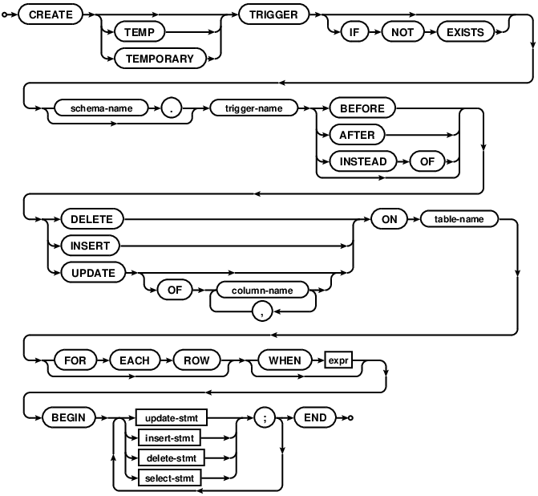

SQLite Triggers (+ Android Room)
Introduction⌗
SQLite is one of the most used database. This is because it is used on almost all mobile devices in the world. As SQLite is very similar to SQL everyone already knows the basic concepts like querying, inserting, updating, deleting data; databases and tables; joining tables etc. But SQLite also has some advanced features and this article is about one of such called Trigger.
If we try to speculate on the name “Trigger” we might say that probably something will be done when some changes are made to the database. And we’re pretty close to the truth.
According to documentation:
Triggers are database operations that are automatically performed when a specified database event occurs.
Pretty clear, but there is one caveat: this change doesn’t leave SQLite world. That “operation” is not any kind of callback that we can handle and do some work. No, instead we can intercept some SQLite query and either do some work before it, instead of it or *after *it.
Syntax of how to create trigger will help us to understand what we’re able to do:
Source
Let’s analyze this line by line:
-
CREATE TRIGGER — command that says that we want to create trigger.
-
trigger-name — is a name of the trigger
-
BEFORE/AFTER/INSTEAD OF — is a mode of the trigger (when we’d like our operation to work — before our actual query, after or instead)
-
DELETE/INSERT/UPDATE ON table-name — is description on the query which will activate our trigger
-
BEGIN stmt; END — is actual trigger operation
For other parts of create trigger statement please take a look at documentation
So, if we’d like to create trigger, we can execute such query:
CREATE TRIGGER update_value INSTEAD OF UPDATE ON persons
BEGIN
UPDATE persons(age) values(21)
END;
In such example whenever any update on persons table happen instead of actual update for all affected rows, value of column age will be set to 21.
This example looks weird, but main idea is to become familiar with syntax. And now, when we should be fine with that, one important question might arise: why we need or even might need triggers? It feels so unsafe to implement business logic this way as it will be difficult to test, it might be broken with database schema updates and it is implicit somewhere inside SQL. It seems better to expose all the callbacks of database changes to our actual program and implement all the required logic in code. And personally I think that this is for sure relevant questions.
However one of the cases where triggers might be not bad is logging over table changes. Let’s see how it might look like with example.
SQLite Trigger Example⌗
Let’s imagine that we have some data which can be structured in one table (we’ll call it data) with such structure:
order_id | timestamp | price
Table contains three columns:
-
order_id — some id of order
-
timestamp — timestamp when order should be executed
-
price — price of the order
And for example we’d like to be able to log all the information on when and what was inserted into that database. We’ll store that information in the log table. It has the following structure:
_id | timestamp | payload
Where:
-
_id — is generic id
-
timestamp — is timestamp of when insertion was done
-
payload — is data which was inserted
Let’s solve this problem using triggers.
Setup⌗
First of all we’ll download SQLite command line tool for our platform following instructions here. Then we run sqlite3 in terminal providing database name and we’re ready:
% sqlite testdb
Create tables⌗
Then let’s create our tables:
sqlite > create table data(order_id integer primary key, timestamp integer, price real);
sqlite > create table log(_id integer primary key, timestamp text, payload text);
If you stuck with syntax you always can check documentation on command-line-interface of SQLite
Create trigger⌗
Now let’s create trigger:
create trigger order_added after insert on data
begin
insert into log(timestamp, payload) values(datetime(), new.order_id || ' ' || new.timestamp || ' ' || new.price);
end;
Here we:
-
create trigger called order_added (because we want to trigger on order added into data table)
-
that trigger should activate after insert on data — after something is inserted into data table
-
actual operation inserts into log table current time and concatenated values of what was inserted into data table
One can see that data which activated our trigger’s operation can be accessed via new. . So if we’d like to access price which was inserted into data table we can refer to it as new.price
Activate trigger⌗
So now we’re ready to activate our trigger by inserting something into data table:
sqlite > insert into data(timestamp, price) values(1568069843, 12.2);
sqlite > insert into data(timestamp, price) values(1568069862, 15.2);
Check result⌗
To check the result let’s query what is inside log table:
sqlite > select * from log;
1|2020-01-03 06:46:52|1 1568069843 12.2
2|2020-01-03 06:46:56|2 1568069862 15.2
And we see that we have exactly two records in our log table. Timestamp column has date-time of when data was inserted and payload column has all the information on the data that was inserted.
OK, that was interesting. That doesn’t mean that tomorrow you should start using triggers, but at least it is good to know that such feature exists. Though we here used command line tool, but maybe we’d like to create trigger inside our Android app. Let’s look how we can achieve that.
Android Room add SQLite Trigger⌗
Using SQLite database on Android is traditionally was done using SQLiteDatabase, SQLiteOpenHelper and Cursor. Though now Room from architecture components becomes one of the most common ways to work with database on Android. But Room doesn’t support triggers (whereas SQLiteDatabase does). Therefore in order to work with triggers on Android we have to return to the basics.
In Room during database creation we can add callback where we can get access to the SQLiteDatabase. On that database we can call execSQL method, which is basically executing SQL command:
db.execSQL(
"""
create trigger order_added after insert on data
begin
insert into log(timestamp, payload) values(datetime(), new.order_id || ' ' || new.timestamp || ' ' || new.price);
end;
""".*trimIndent*()
)
And that’s it.
It is worth noting that (considering that triggers can be abused and lead to some issues if handled without care) SQLite command written in execSQL is not validated at compile time (unlike commands one can write in Room’s @Query annotation). So here one should be twice as more attentive.
But to test that it works let’s add a bit of a code. We’ll start from describing our entities:
@Entity(tableName = "data")
data class Order(
@PrimaryKey
@ColumnInfo(name = "order_id")
val orderId: Int,
@ColumnInfo(name = "timestamp")
val timestamp: Int,
@ColumnInfo(name = "price")
val price: Double
)
@Entity(tableName = "log")
data class OrderInsertedLog(
@PrimaryKey
@ColumnInfo(name = "_id")
val id: Int,
@ColumnInfo(name = "timestamp")
val timestamp: String,
@ColumnInfo(name = "payload")
val payload: String
)
Next create DAOs:
@Dao
interface OrderDao {
@Insert
suspend fun insert(order: Order)
@Query("select * from data")
suspend fun read(): List<Order>
}
@Dao
interface LogDao {
@Query("select * from log")
suspend fun read(): List<OrderInsertedLog>
}
And finally we’ll create a database we’ll work with:
@Database(entities = [Order::class, OrderInsertedLog::class], version = 1)
abstract class AppDb : RoomDatabase() {
abstract fun orderDao(): OrderDao
abstract fun logDao(): LogDao
companion object {
private var INSTANCE: AppDb? = null
fun getDatabase(context: Context): AppDb {
return INSTANCE ?: Room
.databaseBuilder(
context.*applicationContext*,
AppDb::class.*java*,
"appdb"
)
.addCallback(DB_CALLBACK)
.build()
.*also *{ INSTANCE = it }
}
private val DB_CALLBACK = object : RoomDatabase.Callback() {
override fun onCreate(db: SupportSQLiteDatabase) {
super.onCreate(db)
db.execSQL(...)
}
}
}
}
If you have issues with setting up Room you can refer to the documentation
And in ViewModel we’ll actually use this database to verify that our trigger worked:
viewModelScope.launch {
db.orderDao().*apply *{
insert(Order(1, 1568069843, 12.2))
insert(Order(2, 1568069862, 15.2))
}
db.logDao().read()
.*forEach *{
Log.e("TEST_DB", "log: $it")
}
}
The results printed in logs will be:
E/TEST_DB: log: OrderInsertedLog(id=1, timestamp=2020-01-03 08:20:01, payload=1 1568069843 12.2)
E/TEST_DB: log: OrderInsertedLog(id=2, timestamp=2020-01-03 08:20:01, payload=2 1568069862 15.2)
And that means that our trigger worked great!
Android Room Changes callback⌗
Having SQLite triggers might be fun, but in usual work we are most interested in the handling some changes in our queries inside our code. This might be some callback, RxJava Observable, Kotlin coroutines Flow etc (which triggers on some update). Let’s find out how it works.
First or all we’ll change the DAO for our log table to return instead of list of items in the table — Flow of these lists to get actual values when they appear in table:
@Dao
interface LogDao {
@Query("select * from log")
fun read(): **Flow<**List<OrderInsertedLog>**>**
}
And we replace usage of our LogDao to instead collect data from Flow:
db.logDao().read()
.*collect *{ data ->
data.*forEach *{
Log.e("TEST_DB", "log: $it")
}
}
After we execute the program, we’ll see that nothing will be changed so far. First, our program inserts values into data table, then our trigger writes into log, after that we start the Flow from log table and receive new values.
Let’s look at how inside all this is implemented. When we look at the implementation of the LogDao#read we see that it uses CoroutinesRoom.createFlow method (source code). Here is short snippet of how this method looks like:
[@JvmStatic](http://twitter.com/JvmStatic)
fun <R> createFlow(
db: RoomDatabase,
inTransaction: Boolean,
tableNames: Array<String>,
callable: Callable<R>
): Flow<[@JvmSuppressWildcards](http://twitter.com/JvmSuppressWildcards) R> = flow {
val observerChannel = Channel<Unit>(Channel.CONFLATED)
val observer = object : **InvalidationTracker.Observer**(tableNames) {
override fun onInvalidated(tables: MutableSet<String>) {
observerChannel.offer(Unit)
}
}
observerChannel.offer(Unit) // Initial signal to perform first query.
**db.invalidationTracker.addObserver(observer)**
for (signal in observerChannel) {
val result = callable.call()
**emit(result)**
}
}
So what important this function does:
-
it creates InvalidationTracker.Observer
-
registers it in db.invalidationTracker
-
each update from db.invalidationTracker will lead to executing callable, in which actual request to table is made to get results which should be returned to the caller
Should be good to understand that database has some invalidationTracker which can signal when some table was invalidated.
NOTE: one can see that InvalidattionTracker.Observer is created for some particular tables. When these tables are changed — observer will be triggered.
If we go to InvalidationTracker sources we’ll see that it is actually not that small class. Here I’ll highlight main things for understanding what it is and how it works.
First thing is that tracker creates its own utility temp table in database for writing there all the changes made in tables:
private static final String CREATE_TRACKING_TABLE_SQL =
"CREATE TEMP TABLE " + UPDATE_TABLE_NAME + "("
+ TABLE_ID_COLUMN_NAME + " INTEGER PRIMARY KEY, "
+ INVALIDATED_COLUMN_NAME + " INTEGER NOT NULL DEFAULT 0)";
Then there is a method to start tracking some table in database for changes:
private void startTrackingTable(SupportSQLiteDatabase writableDb, int tableId) {
writableDb.execSQL(
"INSERT OR IGNORE INTO " + UPDATE_TABLE_NAME + " VALUES(" + tableId + ", 0)");
final String tableName = mTableNames[tableId];
StringBuilder stringBuilder = new StringBuilder();
for (String trigger : TRIGGERS) {
stringBuilder.setLength(0);
stringBuilder.append("CREATE TEMP TRIGGER IF NOT EXISTS ");
appendTriggerName(stringBuilder, tableName, trigger);
stringBuilder.append(" AFTER ")
.append(trigger)
.append(" ON `")
.append(tableName)
.append("` BEGIN UPDATE ")
.append(UPDATE_TABLE_NAME)
.append(" SET ").append(INVALIDATED_COLUMN_NAME).append(" = 1")
.append(" WHERE ").append(TABLE_ID_COLUMN_NAME).append(" = ").append(tableId)
.append(" AND ").append(INVALIDATED_COLUMN_NAME).append(" = 0")
.append("; END");
writableDb.execSQL(stringBuilder.toString());
}
}
And whoa! Tracker creates trigger for any update, insert or delete for a given table with copying table name and column to the tracking table. Sounds familiar!
This method is called in:
void syncTriggers(SupportSQLiteDatabase database)
This method in short checks all the registered observers and based on that either creates triggers or removes them.
Also tracker has:
Runnable mRefreshRunnable = new Runnable() {
...
synchronized (mObserverMap) {
for (entry : mObserverMap) {
entry.getValue()
.notifyByTableInvalidStatus(invalidatedTableIds);
}
...
}
In which actual checks on what was updated are made and where all the registered observers are notified.
Cases in which all these methods (such as syncTriggers, or running refresh runnable) called are out of scope of this article. It is better to check the source code directly
Android Room Changes callback and custom SQLite Trigger⌗
Now as we know how under the hood updates are triggered into our code, let’s try to test on how this is related to the custom SQLite triggers. The case we’re interested in is whether custom SQLite trigger’s operation can trigger our code which is listening for changes in the place SQLite trigger’s operation is changing.
Now we can make an educated guess that as we’ve created SQLite trigger and Room under the hood also uses SQLite triggers — everything should work well.
For our test the only thing that we’ll change comparing to the previous test is order in which we subscribe for changes to log table and insert into data table.
viewModelScope.launch {
db.logDao().read()
.*onEach *{ data ->
if (data.isEmpty()) {
Log.e("TEST_DB", "log empty")
}
data.*forEach *{
Log.e("TEST_DB", "log: $it")
}
}
.launchIn(this)
db.orderDao().*apply *{
insert(Order(1, 1568069843, 12.2))
insert(Order(2, 1568069862, 15.2))
}
}
What we’d expect after code execution? Probably that we’ll get three emits in log flow:
-
empty list (initial state)
-
list with first order
-
list with two (first and second) orders
In reality we’ll see the following:
E/TEST_DB: log empty
E/TEST_DB: log: OrderInsertedLog(id=1, timestamp=2020-01-03 08:53:12, payload=1 1568069843 12.2)E/TEST_DB: log: OrderInsertedLog(id=2, timestamp=2020-01-03 08:53:12, payload=2 1568069862 15.2)
We’ve got only two emits (empty list and list with two orders). The reason behind that is that our code runs concurrently, our inserts are pretty close and implementation makes its best to deliver results.
Though the main thing here is that flow from Room works well with custom Triggers. And it is not surprise. There is our custom trigger which listens to data table and writes into log table, and there is Room’s trigger which listens to log table and writes into its internal table (to deliver results into our code). So these dependent calls work pretty well.
Conclusion⌗
And that’s it what I have for you for now. I hope now you know a little bit more on the database change triggers — both SQLite and Room— and now you’ll be able to make some weighted decisions in the future. Don’t forget to always dive deep and look at what is happening under the hood and learn basics.
Happy coding!